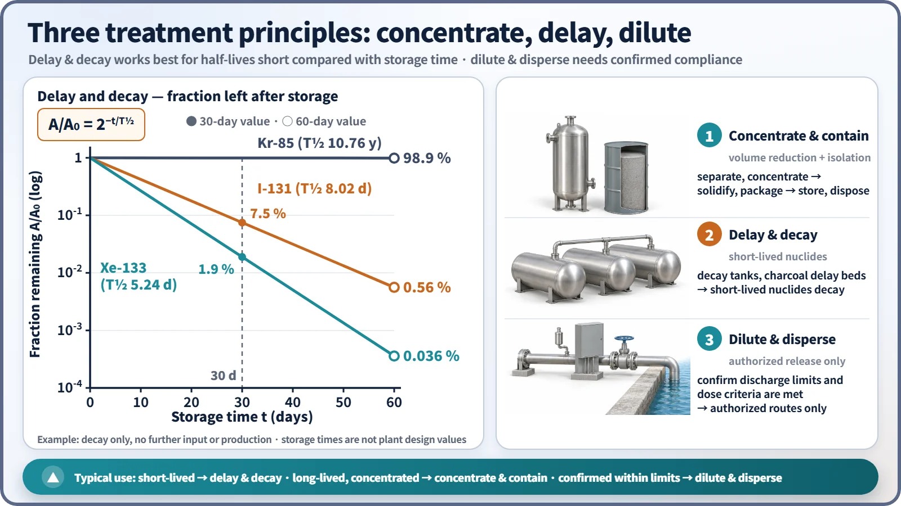
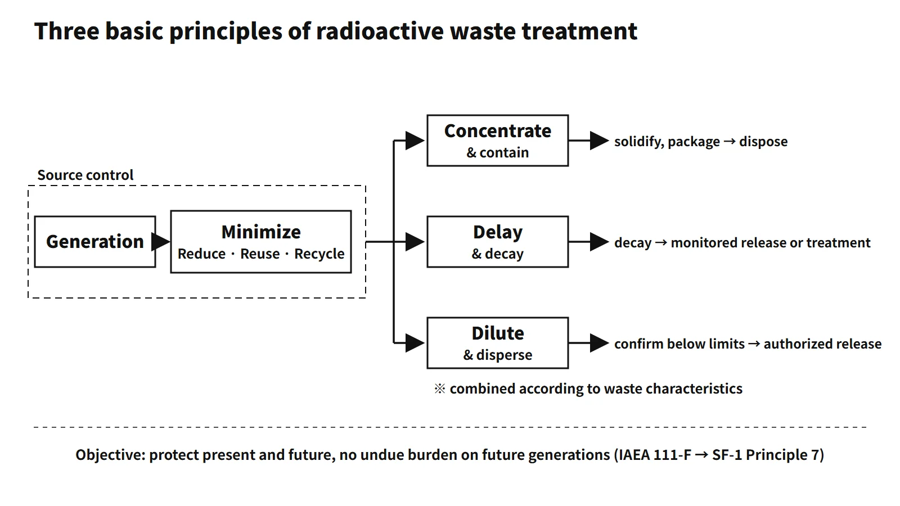

Waste, Fuel Cycle & Decommissioning · C-WD-004
Radioactive Waste Management Principles — the IAEA Nine Principles, the Three Treatment Principles and the South Korean Legal Framework
What radioactive waste management must protect (nine principles) and how radioactivity is handled in practice (concentrate and contain, delay and decay, dilute and disperse).
The radioactive waste management principles are the basic norms that govern every stage of radioactive waste, from generation to disposal. Their goal is to protect human health and the environment now and in the future without imposing undue burdens on future generations.
A good first line for an answer: "Management follows the objective and nine principles of IAEA Safety Series 111-F (1995), now carried forward in Principle 7 of SF-1 (2006) and in GSR Part 5. Actual treatment applies the three principles of concentrate and contain, delay and decay, and dilute and disperse."
Exam questions come in two forms. If the question asks for the "management principles", answer with the nine principles (2010 exam, session 4, Q4); if it asks for the "basic principles of treatment (three)", answer with the three treatment principles (2021 exam, session 1, Q3). Not mixing the two is the first scoring point.
Principle and mechanism
The management objective and the IAEA nine principles
In Safety Series No. 111-F "The Principles of Radioactive Waste Management" (1995), the IAEA set the objective as follows: "to deal with radioactive waste in a manner that protects human health and the environment now and in the future without imposing undue burdens on future generations." The text of the 2010 exam, session 4, Q4 is exactly this sentence. The objective is broken down into nine principles.
| No. | Principle | Key content | IAEA theme area (para 108) |
|---|---|---|---|
| 1 | Protection of human health | Ensure an acceptable level of protection of human health | Protection of human health |
| 2 | Protection of the environment | Ensure an acceptable level of protection of the environment | Protection of the environment |
| 3 | Protection beyond national borders | Take account of effects on health and the environment beyond national borders | Protection beyond national borders |
| 4 | Protection of future generations | Predicted health impacts on future generations ≤ levels acceptable today | Responsibility to future generations |
| 5 | Burdens on future generations | Impose no undue burdens on future generations | Responsibility to future generations |
| 6 | National legal framework | A legal framework with clear allocation of responsibilities and an independent regulatory function | Implementation |
| 7 | Control of radioactive waste generation | Keep generation to the minimum practicable (activity and volume) | Implementation |
| 8 | Interdependencies between generation and management steps | Consider the effects between steps from generation to disposal together | Implementation |
| 9 | Safety of facilities | Ensure the safety of management facilities throughout their lifetime | Implementation |
The right-hand column shows the five theme areas set out in the 111-F text (para 108). The same paragraph states that the order of the principles does not imply priority. Principles 4 and 5 look similar but differ: principle 4 concerns the health impacts received by future generations, while principle 5 concerns the management actions and costs passed on to them. It does not require removing every burden, only undue burdens. "Disposal that does not rely on institutional control" and "the present generation providing the technology, facilities and funding" come from principle 5.
Principle 8, interdependence, often matters in practice. Waste-form specifications can be fixed only once the disposal facility's waste acceptance criteria (WAC) are set. Changing the treatment method changes the storage, transport and disposal conditions as well. That is why all steps are planned as one system.
![Structure chart: the IAEA management objective at the top, the nine principles arranged under five theme areas (human health, environment, beyond borders, future generations with principles 4 and 5, implementation with principles 6 to 9), a note on para 308 preferring concentrate and contain, cards for Articles 4(1), 5(2) and 6 of the Radioactive Waste Management Act, and a panel showing 111-F superseded by SF-1 (2006), GSR Part 5 (2009) and the separate Joint Convention Article 11, beside an image of a drum in a concrete vault](../../assets/images/concepts/c-wd-004-waste-management-principles/fig1-nine-principles-map.webp)
The current IAEA system — where did the nine principles go?
In 2006, 111-F was superseded as a whole by SF-1 "Fundamental Safety Principles". SF-1 combines the safety fundamentals for nuclear installations, radiation protection and waste into ten principles. The waste principles went mainly into Principle 7 (protection of present and future generations); waste minimization and the prohibition of undue burdens on future generations are also in the commentary on this principle.
Detailed requirements are left to lower-level documents.
- GSR Part 5 (2009) "Predisposal Management of Radioactive Waste": sets out, for the predisposal steps, Requirement 6 interdependences, Requirement 8 control of waste generation (minimization), Requirement 9 characterization and classification, Requirement 10 processing, Requirement 11 storage and Requirement 12 acceptance criteria. A revision (DS548) is under way.
- SSR-5 (2011) "Disposal of Radioactive Waste": requirements for disposal.
- Joint Convention, Article 11: the "Joint Convention on the Safety of Spent Fuel Management and on the Safety of Radioactive Waste Management" (adopted 1997, in force 2001, joined by South Korea in 2002) turned the nine principles into treaty obligations. It covers criticality and residual heat management, waste minimization, interdependencies between steps, protection of individuals, society and the environment, limiting impacts on future generations, and avoiding undue burdens.
The three basic principles of treatment
If the management principles say "what to protect", the three treatment principles say "how to handle radioactivity". Radioactivity cannot be destroyed by chemical treatment, so there are three options. Actual systems combine all three according to the characteristics of the waste. The current basis is GSR Part 5 paras 4.1–4.4, which define the three approaches, state that dilution and dispersion are justified only within authorized limits set by the regulatory body (4.3), and that, as far as reasonably practicable, concentration and containment is the preferred option (4.4). The old 111-F commentary (para 308) said the same.
| Principle | Method | Plant examples |
|---|---|---|
| Concentrate and contain | Collect radioactive material into a small volume, solidify and seal it, isolate it from the environment | Evaporation, ion exchange, filtration → spent resin and concentrated liquid waste → solidified waste form → disposal |
| Delay and decay | Hold short-lived nuclides so that decay reduces them, then pass to the next step | Gas decay tanks, charcoal delay beds (Xe, Kr), liquid holdup tanks |
| Dilute and disperse | After treatment, confirm that licence conditions such as discharge limits and dose criteria are met and discharge only through authorized routes | Release through stacks and outfalls after monitoring |
Delay and decay is more effective the shorter the half-life compared with the holding time. Considering decay alone without further input, the remaining fraction is A/A₀ = 2^(−t/T½). As a worked example, after 60 days of holding only 0.036 % of Xe-133 (T½ 5.24 days) and 0.56 % of I-131 (8.02 days) remain. Kr-85 (10.76 years), by contrast, still has 98.9 % left. The holding times of 30 and 60 days are calculation examples, not the design values of any particular plant. Long-lived nuclides end up being concentrated and contained.
Dilute and disperse is a conditional principle. It is confirmed by monitoring that the discharge is below the discharge control limits, and the release goes only through authorized stacks and outfalls. What is prohibited is arbitrary dilution to get around regulatory limits: Article 8(2) of the classification notice prohibits deliberate mixing or dilution to meet the clearance level or clearance dose. Environmental discharge and clearance (release from regulatory control) are different systems.

The waste hierarchy and treatment processes
The order in which principle 7 (control of generation) is carried out is the waste hierarchy. First avoid and reduce generation (Reduce). Next come reuse (Reuse) and recycling (Recycle, including recycling after clearance). Whatever remains is treated and disposed of. Treatment proceeds as pretreatment (collection, segregation, decontamination) → treatment (volume reduction by compaction, incineration, drying, evaporation; nuclide removal) → conditioning (solidification in cement, polymer or glass; packaging).
What it means in a plant
- Design: the gaseous, liquid and solid radwaste systems are the embodiment of the three principles. Gas is held in decay tanks and charcoal delay beds (delay and decay) and then released under monitoring (dilute and disperse); liquid is evaporated and ion-exchanged (concentrate and contain) and the treated water released under monitoring; solids are volume-reduced and solidified (concentrate and contain).
- Operation: reducing generation (work planning, control of materials brought in, reuse) is principle 7 in practice. Treatment work manages worker dose by ALARA.
- Link to acceptance criteria: the acceptance criteria of the Gyeongju disposal facility set the specifications of plant waste forms and drums (principle 8).
- Spent fuel: before a decision to dispose of it, it is material in storage.
Regulatory basis
- Radioactive Waste Management Act (enacted 2008, in force 2009)
- Article 4(1): the State shall establish measures for safe and efficient management in a way that does not burden future generations (corresponds to principle 5)
- Article 4(2): promotion of public participation and disclosure of important matters
- Article 5(2): generators' duty to minimize generation and manage waste safely (principle 7)
- Article 6: the Minister of Trade, Industry and Energy draws up a basic management plan covering a 30-year period every five years. The 3rd Basic Plan for LILW was approved by the Atomic Energy Promotion Commission in March 2026.
- Article 3 is "Relationship to other laws". Citing it as the basic-principles article is wrong.
- High-level waste: covered by the "Special Act on the Management of High-Level Radioactive Waste" (in force September 2025) and the High-Level Radioactive Waste Management Committee. The current basic plan for high-level waste is the 2nd plan (2021.12).
- Technical standards for treatment facilities (2009 exam, session 2, Q5(b)): NSSC Notice No. 2014-62 "Technical Standards for the Structure and Equipment of Radioactive Waste Treatment Facilities" (delegated by Article 74(2) of Korea's Rule on Technical Standards for Radiation Safety Management, etc.) sets the requirements.
- Article 3: control of releases, concentrations at the boundary below the discharge control limits, no discharge other than through authorized stacks and outfalls, sampling and monitoring equipment
- Articles 4–6: backflow prevention, fire and explosion prevention, seismic design
- Article 7: ALARA design
- Articles 8–9: leak dikes and sloped floors, tank level monitoring and high-level alarms, return of overflow to the treatment system
- Article 10: solidification and stabilization suitable for disposal
- Article 11: design and welding to industrial standards, hydrostatic and pneumatic tests
- Reactor facility side: Article 32 (radioactive waste treatment and storage facilities, etc.) of Korea's Rule on Technical Standards for Reactor Facilities, etc. (Korean technical standard rule) covers design, and Article 66 (radioactive waste management plan) covers operation.
- United States: 10 CFR 50 Appendix A GDC 60 (control of releases), 63 (monitoring of storage) and 64 (monitoring of releases). Appendix I sets ALARA design objectives per light water reactor such as 3 mrem/year whole body from liquid effluents and 10 mrad/year air gamma dose from gaseous effluents.
- Changes since the questions were set: the 2002 (67th exam), 2009 and 2010 questions date from the 111-F period. The current system is SF-1, GSR Part 5 and the Joint Convention, and in South Korea the Radioactive Waste Management Act (in force 2009) and the High-Level Waste Special Act (in force 2025) have been added.
Easily confused pairs
| Item | Management principles (nine) | Three treatment principles |
|---|---|---|
| Question | What to protect, and with what system | How to handle radioactivity physically |
| Scope | All steps from generation to disposal, and institutions | Treatment processes |
| Source | IAEA 111-F → SF-1, GSR Part 5, Joint Convention | General principles of waste engineering |
| Exams | 2010-4-4, 2022-2-5 | 2021-1-3, R067-4-6, 2009-2-5 |
Also distinguish management, treatment and disposal. Management covers all steps, treatment is a process that changes the waste's characteristics, and disposal is final isolation with no intention of retrieval. Storage assumes retrieval.
Key points at a glance
- Objective: protect health and the environment now and in the future; no undue burden on future generations (IAEA 111-F).
- Concentrate and contain: reduce volume by evaporation, ion exchange and filtration → solidify and seal → isolate in a disposal facility (long-lived nuclides).
- Delay and decay: hold in decay tanks or charcoal delay beds → short-lived nuclides decay (Xe-133: about 0.04 % left after 60 days).
- Dilute and disperse: after treatment, discharge only through authorized routes after confirming compliance with discharge control limits (111-F gives priority to concentrate and contain).
- Prerequisites: minimize generation (waste hierarchy, 3R), combine the principles according to waste characteristics, and no arbitrary dilution to evade regulatory limits.
- The nine management principles in brief: protection of health, the environment, beyond borders and future generations; burdens on future generations; national legal framework; control of generation; interdependence; facility safety.
- Current basis: SF-1 Principle 7, GSR Part 5, Joint Convention Article 11, Radioactive Waste Management Act Articles 4, 5 and 6.

This is an example answer, not an official one, written to the current (2026) rules.
Exam relevance
In the Korean Professional Engineer (Nuclear Power) exam these principles appeared five times between 2002 and 2022: 67th exam (2002), session 4, Q6 (basic principles of radioactive waste treatment); 2009 exam, session 2, Q5 (treatment principles and technical standards for treatment facilities); 2010 exam, session 4, Q4 (safety principles following the IAEA management objective); 2021 exam, session 1, Q3 (the three basic principles of treatment); and 2022 exam, session 2, Q5 (purpose of treatment and basic principles of management). Read the question carefully: "management principles" calls for the nine principles, "basic principles of treatment" for the three. Add that dilute and disperse is conditional on authorized limits and routes, and cite Article 4 or 5, not Article 3, of the Radioactive Waste Management Act.